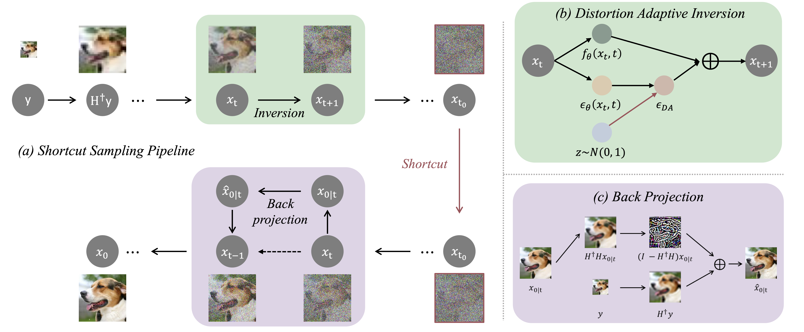

Preprint


Ph.D. Student @HKUST, Hong Kong
Focus: Gen AI, Post Training
Contact: gongyeliuu@gmail.com
Hi, I'm Gongye Liu, a first-year Ph.D. student at The Hong Kong University of Science and Technology (HKUST), supervised by Prof. Wenhan Luo (main) and Prof. Hongbo Fu.
Prior to that, I obtained my M.Sc degree(2022-2025) in Artificial Intelligence from Tsinghua University, supervised by Professor Yujiu Yang. I received my B.Eng degree(2018-2022) in Beihang University.
I am working on Generative AI, with a focus on diffusion/flow-matching models for images and videos. My interests include foundation models, post-training techniques, and controllable generation.


NeurIPS, 2025
GRPO on Flow Matching models. Achieving 0.95 on GenEval Benchmark.


NeurIPS, 2025
A systematic pipeline that leverages human feedback to improve the flow-based VDMs.


Preprint, 2026
A comprehensive survey on the recent development of alignment methods in diffusion and flow-matching models.

CVPR, 2026
Mitigates implicit over-optimization in Flow-GRPO via regulated clipping.


CVPR, 2026
Improves few-step rectified-flow distillation via online trajectory sampling.


ICLR, 2026
Adapts video diffusion priors for viewpoint planning in 4D scenes.

TMLR, 2025
A comprehensive survey on the recent development of visual autoregressive models.


SIGGRAPH Asia (Journal Track), 2024
Reference based Stylized Text-to-Image/Video Generation with Limited Stylized Data.

ECCV (Oral Presentation), 2024
An Open-Domain High-Quality Image-to-Video Foundation Model.
